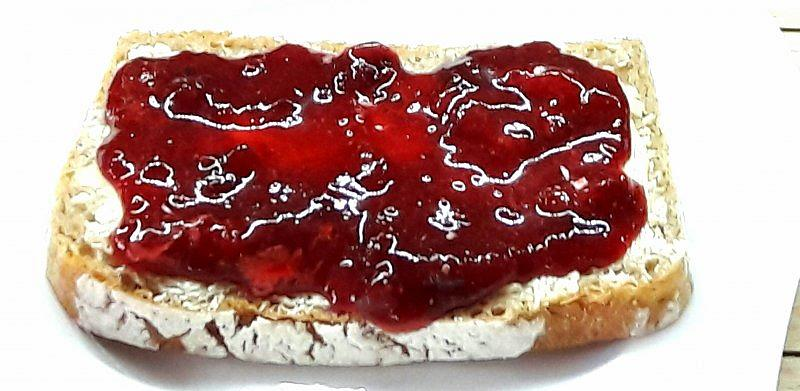

Kanapka z dżemorem i masłem orzechowym

Opis
Dżem jest pyszny, ale za mokry. Masło orzechowe jest pyszne, ale za suche.
A gdyby tak...
Składniki
- Chleb, najlepiej pszenny
- Dżem, najlepiej co najmniej 20% owoców
- Masło orzechowe lub krem orzechowy jeżeli chcemy spędzić mniej niż 30 minut na mieszaniu przed każdym użyciem
- Opcjonalnie zwykłe masło. Tak, smaruję czasem kanapkę zwykłym masłem zanim posmaruję ją masłem orzechowym. Miałem trudne dzieciństwo.
Sposób przygotowania
- Chleb wyjąć z zamrażarki. Poczekać, aż się rozmrozi.
- Opcjonalnie posmarować chleb masłem.
- Posmarować chleb masłem orzechowym.
- Pokryć cieńką warstwą dżemu.